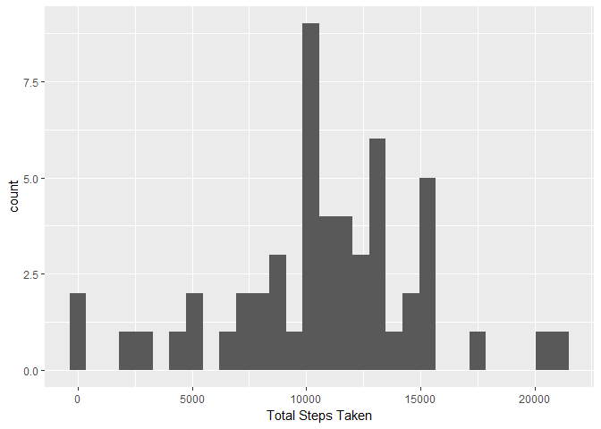
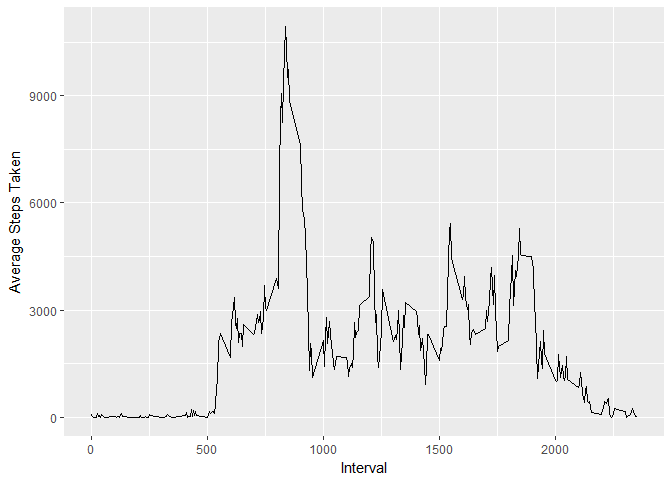
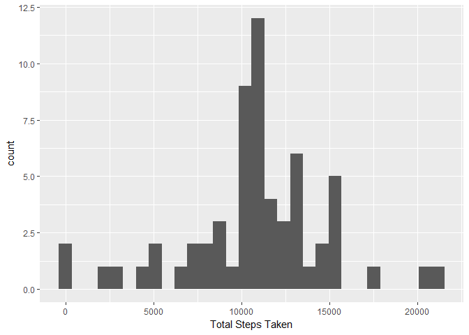
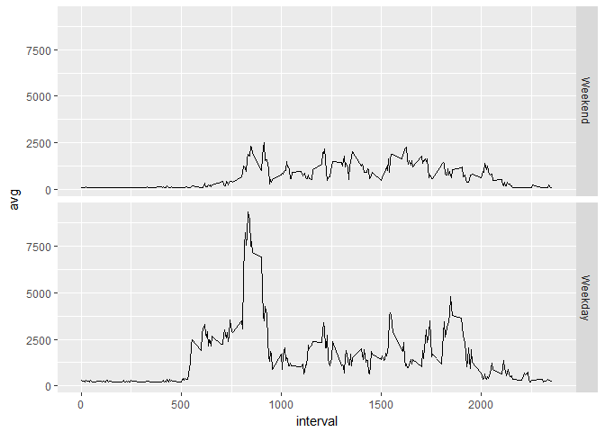

First we load the required packages
library(dplyr)##
## Attaching package: 'dplyr'## The following objects are masked from 'package:stats':
##
## filter, lag## The following objects are masked from 'package:base':
##
## intersect, setdiff, setequal, unionlibrary(ggplot2)## Warning: package 'ggplot2' was built under R version 3.4.3Loading the data and making the date variable into the date type (instead of the factor variable that it was originally)
data <- read.csv("activity.csv")
data$date <- as.Date(data$date, "%Y-%m-%d")Total Number of Steps Taken per day
data <- data[complete.cases(data),]
data <- group_by(data, date)
sum <- summarize(data, total_steps = sum(steps))We should now have an object called “sum” which contains the total steps taken each day
qplot(sum$total_steps, geom = "histogram", xlab = "Total Steps Taken")## `stat_bin()` using `bins = 30`. Pick better value with `binwidth`.
Calculating the mean and median of the total number of steps taken per day
mean_steps <- mean(sum$total_steps)
median_steps <- median(sum$total_steps)
mean_steps## [1] 10766.19median_steps## [1] 10765The mean seems to be 10766.188 and the median seems to be 10765 steps.
Onto creating the timeseries plot with “interval” on the x axis and average steps taken over the number of days on the y axis.
data_grp_int <- group_by(data, interval)
sum_int <- summarize(data_grp_int, avg = sum(steps))
qplot(sum_int$interval, sum_int$avg, geom = "line", xlab = "Interval", ylab = "Average Steps Taken")
max_steps <- max(sum_int$avg)
interval_maxsteps <- sum_int[sum_int$avg == max(sum_int$avg),]
interval_maxsteps## # A tibble: 1 x 2
## interval avg
## <int> <int>
## 1 835 10927It seems that interval 835 has the maximum average steps.
To see how many missing values the dataset has, we’ll reload the dataset and then use is.na
data <- read.csv("activity.csv")
data$date <- as.Date(data$date, "%Y-%m-%d")
sum(is.na(data))## [1] 2304summary(data)## steps date interval
## Min. : 0.00 Min. :2012-10-01 Min. : 0.0
## 1st Qu.: 0.00 1st Qu.:2012-10-16 1st Qu.: 588.8
## Median : 0.00 Median :2012-10-31 Median :1177.5
## Mean : 37.38 Mean :2012-10-31 Mean :1177.5
## 3rd Qu.: 12.00 3rd Qu.:2012-11-15 3rd Qu.:1766.2
## Max. :806.00 Max. :2012-11-30 Max. :2355.0
## NA's :2304It seems like we have 2304 missing values (all within the steps variable) WE’ll impute these missing values with the mean of the steps variable across all observations.
We then save that dataset as a csv file named as “data_no_na.csv”
data$steps <- replace(data$steps, is.na(data$steps), mean(data$steps, na.rm = TRUE))
write.table(data, file = "data_no_na.csv")Since our new “data” object has the missing values imputed, we can use the same code as before to make the histogram and find the mean and medians
data <- group_by(data, date)
sum <- summarize(data, total_steps = sum(steps))
qplot(sum$total_steps, geom = "histogram", xlab = "Total Steps Taken")## `stat_bin()` using `bins = 30`. Pick better value with `binwidth`.
mean_steps <- mean(sum$total_steps)
median_steps <- median(sum$total_steps)
mean_steps## [1] 10766.19median_steps## [1] 10766.19Now the mean and median both come to 10766.19 which are fairly small changes from what we saw earlier. The interesting thing is that the mean and median are the same now.
Now to create a factor variable which indicates if a given date is a weekday or a weekend
data$days_of_week <- weekdays(data$date)
weekdays <- c("Monday", "Tuesday", "Wednesday", "Thursday", "Friday")
data$weekday <- factor((data$days_of_week %in% weekdays), levels = c(FALSE, TRUE), labels = c("Weekend", "Weekday"))Now to construct the linegraph discribed
data_grpintweek <- group_by(data, interval, weekday)
sum_int <- summarize(data_grpintweek, avg = sum(steps))
ggplot(data = sum_int, aes(x = interval, y = avg)) + geom_line() + facet_grid(weekday~.)